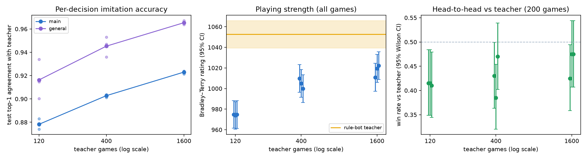
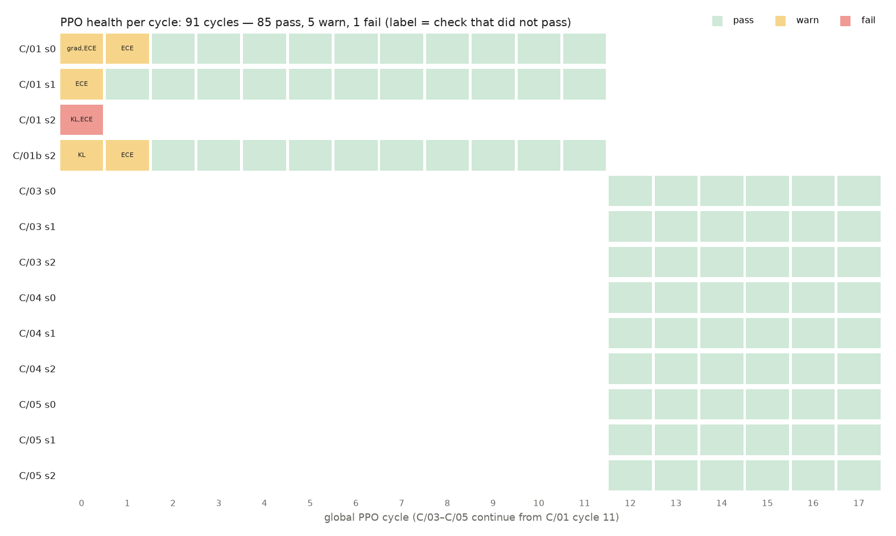

Which stages of imitation → RL actually make a Pokémon TCG agent stronger?
An end-to-end pipeline for the Kaggle PTCG AI Battle (playground), measured stage by stage under a fixed compute budget.
Team
Katsiaryna · Gleb · Maksim
Repository
github.com/kapitan05/ptcg-rl
public · protected main · CI
Deck
Mega Lucario ex
4 official decks in the competition
A long, hidden-information card game with one reward at the end
Environment. The competition's engine asks the acting player a question each step (play, attach, attack, discard, target…) with a list of legal options and how many to pick. ~60–70 decisions per player per game.
Why it's hard. The opponent's hand and both decks are hidden; reward is only win +1 / loss −1 at the end; the action set changes every decision; opponents on Kaggle are other teams' agents.
Baseline. The hosts' rule bot. Submitted to Kaggle: ladder 600 → 538.9.
Objective
Under a fixed compute budget (Eden cluster: 1 GPU + 32 CPUs per job), find which pipeline stages improve head-to-head strength over the rule-bot baseline, and why.
Success measure
Win rate vs. fixed opponents with 95% intervals, ≥ 3 seeds, plus held-out opponents never trained against.
Imitate cheaply, then let RL improve it
Design forked from the 24th-place solution, ported to the playground engine.
Why both models: the GBDT learns from a few hundred games; PPO needs a differentiable policy and a value function, which only the Transformer provides.
One command runs the whole loop, with gates that block bad results
ptcg run configs/exp/C/01_ppo_baseline.yaml --submit
- Environment: playground engine in C++; rule bots match the official Python bots on 10,189 decisions, 0 mismatches.
- Agents: GBDT audit 1e-10; Transformer C++ ≡ PyTorch 2e-5; PPO behavior audit 2e-5 every cycle.
- Measurement: round-robin tournaments, 200–2,000 games per pair, both seats; evaluation seeds disjoint from training.
- Reproducible: config hash in every run ID, one master seed, manifests with git SHA and artifact hashes; CPU reruns bit-identical.
PPO cycles run
450k training games
GPU-hours
~30 min per cycle
experiments, all with ≥ 3 seeds
Kaggle package gated: NumPy ≡ C++ (3.2e-6), 471/471 actions
Copying the teacher well is not enough to beat it

| Experiment | Result |
|---|---|
| A/01 more data | top-1 agreement 0.88 → 0.92, still loses to the teacher (0.41–0.48) |
| A/02 distil to Transformer | 95.5% agreement, but 0.448 [0.41, 0.49] vs. the GBDT |
| A/04 DAgger | 0.505 [0.47, 0.55] vs. equal-budget imitation: no gain |
| C/02 heavier critic | rating −11 on every seed: rejected |
92–96% per-decision agreement still loses games: small errors compound over ~60 decisions. DAgger doesn't help because the student barely shifts distribution (94.2% vs. 95.5% agreement); the ceiling is the teacher itself.
PPO is the only stage that adds strength, and it now beats the teacher

Head-to-head win rate, 3 seeds × 2,000 games per pair (C/06b)
Intervals ≈ ±0.013–0.022. More cycles help with diminishing returns (+8 pp, then +4 pp); gains hold on held-out decks, so it isn't only exploiting training opponents. The opponent-pool variants (snapshot league, PFSP) add nothing measurable. Champion: C/05 seed 0.
22 checks after every PPO cycle; a fail stops the run

Data (win rates per seat, GAE sanity, behavior audit), update (KL per minibatch, clip fraction, gradient spikes), after the update (held-out KL, value calibration, entropy), before reuse (C++ export parity, illegal picks). It caught a real problem: C/01 seed 2 exceeded the KL limit in cycle 0 and was stopped; the rerun with KL early stopping was clean.
What these results do not show yet
Scale
- 18 PPO cycles per model vs. 300–2,500 in the 24th-place run; our curve hasn't flattened.
- ~30 min per cycle vs. ~1–1.5 min there; likely 43 GB of JSON replays per cycle on shared disk (not yet profiled).
Teacher and pool
- Teacher is the rule bot, not strong players: imitation is capped low.
- Opponent pool of 6–11 agents vs. 20–40; one deck only.
Evaluation
- All seeds played the same game deals; at 200 games per pair this made intervals too narrow (a model moved 12 pp between deal sets). Re-ran at 2,000; a proper fix is pending.
External validity
- Only local opponents so far; no Kaggle score for a learned agent yet. Dragapult rule bot is still a near-tie (0.51).
Next experiments, each with a hypothesis
| # | Experiment | Hypothesis / success criterion | When |
|---|---|---|---|
| 1 | Profile and speed up a PPO cycle (rollouts on local disk / binary format) | Cycle time drops ≥ 5×, enabling 100+ cycles | Dec, wk 1 |
| 2 | Fix evaluation: fixed deal set per opponent; intervals over deals | Same model, two evaluations agree within interval | Dec, wk 1 |
| 3 | Long PPO run of the champion (+50–100 cycles) | Keeps improving vs. C/05 (lower bound > 0.5); beats Dragapult rule bot | Dec, wk 2–3 |
| 4 | Use all collected data: 2–4 epochs with KL early stop | Faster improvement per cycle at equal games | Dec, wk 2 |
| 5 | History tokens (opponent's played cards) in the Transformer | Better distillation KL and rating vs. current tokens | Dec–Jan |
| 6 | Failure analysis + Kaggle submissions of the champion | Local ratings predict Kaggle; named losing situations | from now |
Three owners, one shared protocol
Maksim
- PPO throughput (#1) and long champion runs (#3, #4)
- Experiment framework, health checks, cluster jobs
- Integration of the final agent
Katsiaryna
- History tokens (#5): new token contract, C++ ≡ Python parity
- Re-distillation and rating vs. current model
- Then: a head that predicts hidden cards
Gleb
- Evaluation fix (#2): fixed deal sets, intervals over deals
- Kaggle submissions and leaderboard tracking (#6)
- Failure analysis of games lost to the rule bots
Shared rules: one change per experiment, ≥ 3 seeds, config in configs/exp/, hypothesis written before results, PR with review into protected main. Then Jan: combine winners, final runs, report and presentation.
Imitation gets a competent start; RL is what makes it stronger
Champion vs. the rule-bot teacher
first clear win, 6,000 games
vs. held-out decks never trained against
gated PPO cycles; 1 failure caught and fixed
Next: make cycles fast, then train much longer, on an evaluation we trust. Code, configs, results and figures: github.com/kapitan05/ptcg-rl (reports/README.md).